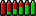

|
Home · All Namespaces · All Classes · Grouped Classes · Modules · Functions | |
The Qt Extended theme is unique in that it has a different mode of display in the home screen versus application screens.
It is important to note that there is a distinct rectangular area used by the system title bar. This area is not available to applications. It corresponds to the area set aside for the window decoration title of maximized windows. A minimal title bar theme and window decoration configuration may look like:
<page name="title" base="themes/qtopia" rect="0,0,0x21">
<image rect="0,0,0x21" src="titlebar-gradient" tile="yes" color="Highlight">
</image>
</page>
This describes a title bar, with no content, using the image "titlebar-gradient" to tile across the screen, tinting it the Highlight color.
[Decoration]
Name = Qtopia
Base = themes/qtopia
[Maximized]
TitleHeight = 21
[Normal]
TitleHeight = 19
This describes the window decoration to use with this theme. The only information required is the height of the window decoration title such that the maximized title height is the same height as the system title.
The title bar has a number of elements that require defined positions including:
Other items that can be displayed in the title bar are discussed later in this section. The following example title bar is designed with the above elements only:
<page name="title" base="themes/qtopia" rect="0,0,0x21">
<image rect="0,0,0x21" src="titlebar-gradient" tile="yes" color="Highlight">
<text rect="4,0,-50,20" name="caption" size="10" bold="yes" shadow="200" color="HighlightedText" align="left,vcenter" transient="yes"/>
<rect name="inputmethod" rect="-22,1,22x19" brush="Highlight" color="None" transient="yes" active="no"/>
<image rect="-100,3,-26,17" src="statusbar" stretch="7,8">
<status name="roaming" rect="4,3,9x9" imageon="roaming"/>
<status name="messages" rect="16,3,9x9" imageon="mailalert"/>
<status name="call_active" rect="28,1,5x12" imageon="incall"/>
<text name="time" rect="-30,0,-4,12" size="10" align="right,vcenter" color="#000000"/>
</image>
<level name="battery" rect="-20,2,6x16" src="battery-small" count="6"/>
<image rect="-12,2,3x16" src="plusminus"/>
<level name="signal" rect="-7,2,6x16" src="signal-small" count="6"/>
</image>
</page>
This places the window caption to the left, then the white status area is created and populated with the status icons, and time field. Finally, the battery and signal level indicators are placed to the right of the screen. The level indicators are described by an image containing a number of frames, given by the count attribute, for example, the battery indicator image is show below:

The inputmethod element is not mentioned above. This element is a placeholder for the input method status icon and is replaced by the IM status icon when the cursor is placed in a text input field. It is common in Qt Extended themes to place this element over the area used by the battery and/or signal level indicators to save space.
The Qt Extended theme provides two different modes for the title bar. The mode described above is used in most screens with the home screen however, the following design is used:

This version displays the following elements:
This can be realized using the following:
<page name="title" base="themes/qtopia" rect="0,0,0x21">
<image rect="0,0,0x21" src="titlebar-gradient" tile="yes" color="Highlight">
<level name="battery" rect="4,4,44x11" src="battery-big" count="6"/>
<level name="signal" rect="-48,4,44x11" src="signal-big" count="6"/>
<rect name="inputmethod" rect="-48,0,44x0" brush="Highlight" color="None" transient="yes" active="no"/>
<image rect="50,3,-51,17" src="statusbar" stretch="7,8">
<status name="alarm" rect="3,3,9x9" imageon="bell_on"/>
<status name="lock" rect="14,3,9x9" imageon="lock_on"/>
<status name="calldivert" rect="25,3,9x9" imageon="calldivert"/>
<status name="roaming" rect="-36,3,9x9" imageon="roaming"/>
<status name="messages" rect="-25,3,9x9" imageon="mailalert"/>
<status name="call_active" rect="-14,1,5x12" imageon="incall"/>
</image>
</image>
</page>
The final task is to enable switching between the two modes. This is achieved using the exclusive element. The exclusive element will display only one of its children at a time. The caption is used to decide which state is shown since there is no caption in the home screen.
<page name="title" base="themes/qtopia" rect="0,0,0x21">
<image rect="0,0,0x21" src="titlebar-gradient" tile="yes" color="Highlight">
<image rect="0,0,1x21" src="titlebar-endcap" color="Highlight"/>
<image rect="-1,0,1x21" src="titlebar-endcap" color="Highlight"/>
<exclusive>
<group>
<level name="battery" rect="4,4,44x11" src="battery-big" count="6"/>
<level name="signal" rect="-48,4,44x11" src="signal-big" count="6"/>
<rect name="inputmethod" rect="-48,0,44x0" brush="Highlight" color="None" transient="yes" active="no"/>
<image rect="50,3,-51,17" src="statusbar" stretch="7,8">
<status name="alarm" rect="3,3,9x9" imageon="bell_on"/>
<status name="lock" rect="14,3,9x9" imageon="lock_on"/>
<status name="calldivert" rect="25,3,9x9" imageon="calldivert"/>
<status name="roaming" rect="-36,3,9x9" imageon="roaming"/>
<status name="messages" rect="-25,3,9x9" imageon="mailalert"/>
<status name="call_active" rect="-14,1,5x12" imageon="incall"/>
</image>
</group>
<group name="caption" transient="yes" active="no">
<text rect="4,0,-50,20" name="caption" size="10" bold="yes" shadow="200" color="HighlightedText" align="left,vcenter" transient="yes"/>
<rect name="inputmethod" rect="-22,1,22x19" brush="Highlight" color="None" transient="yes" active="no"/>
<image rect="-100,3,-26,17" src="statusbar" stretch="7,8">
<status name="roaming" rect="4,3,9x9" imageon="roaming"/>
<status name="messages" rect="16,3,9x9" imageon="mailalert"/>
<status name="call_active" rect="28,1,5x12" imageon="incall"/>
<text name="time" rect="-30,0,-4,12" size="10" align="right,vcenter" color="#000000"/>
</image>
<level name="battery" rect="-20,2,6x16" src="battery-small" count="6"/>
<image rect="-12,2,3x16" src="plusminus"/>
<level name="signal" rect="-7,2,6x16" src="signal-small" count="6"/>
</group>
</exclusive>
</image>
</page>
| Copyright © 2009 Trolltech | Trademarks | Qt Extended 4.4.3 |